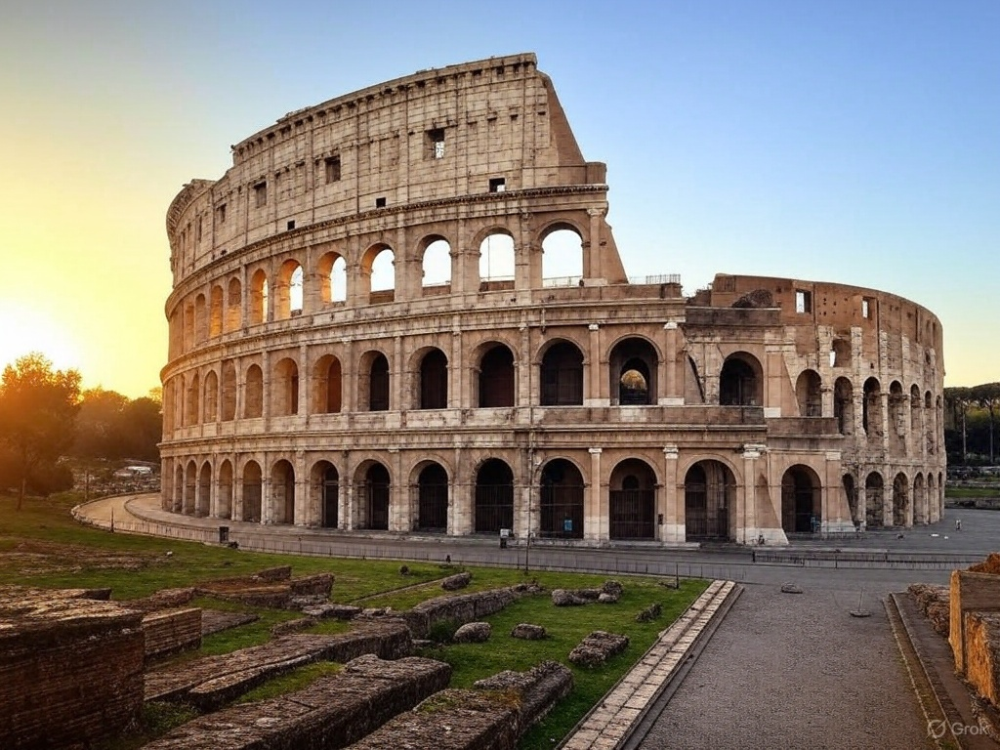
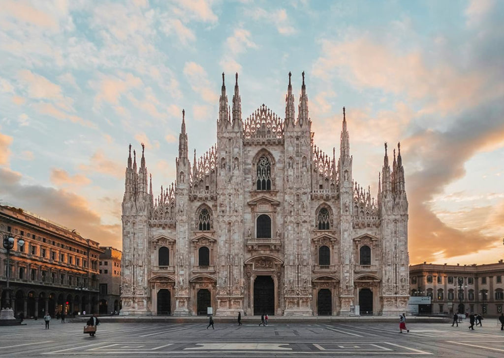
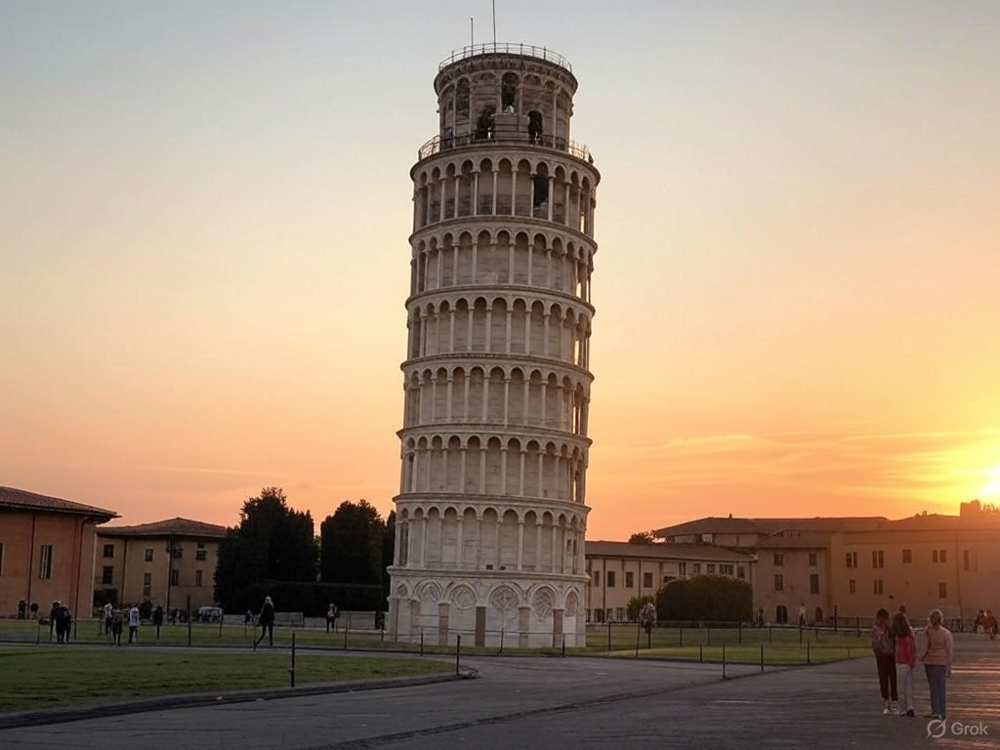
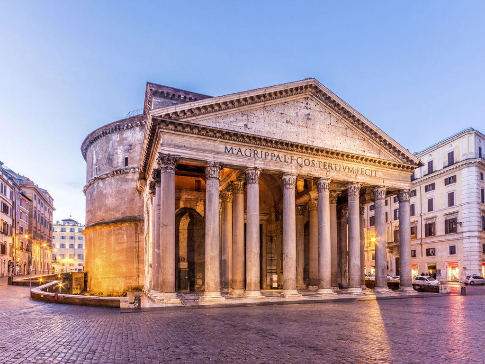
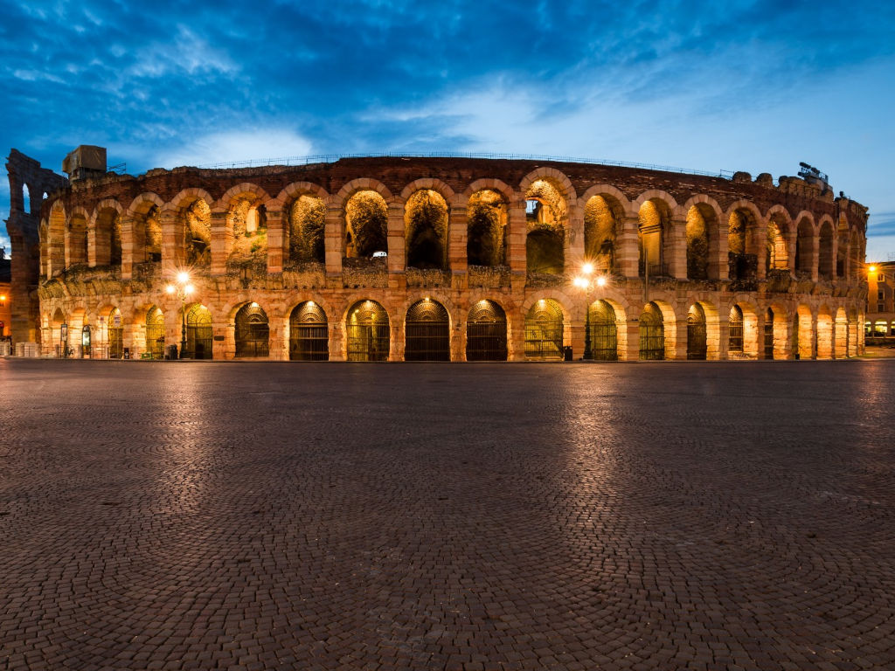

Colosseo
Il Colosseo, conosciuto anche come Anfiteatro Flavio, è il più grande anfiteatro del mondo antico. Costruito sotto l'imperatore Vespasiano nel I secolo d.C., ospitava spettacoli di gladiatori, cacce con animali esotici e persino battaglie navali simulate.

Doumo di Milano
Il Duomo di Milano è una delle cattedrali gotiche più imponenti d'Europa. La sua costruzione iniziò nel 1386 e durò quasi sei secoli. Celebre per la sua facciata riccamente decorata e le oltre 3.400 statue, è un'icona della città lombarda.

Torre di Pisa
La Torre di Pisa, famosa per la sua inclinazione, è il campanile della cattedrale di Santa Maria Assunta. Costruita tra il XII e il XIV secolo, ha un'altezza di circa 56 metri e pende di circa 4 gradi a causa del cedimento del terreno.

Pantheon
Il Pantheon è uno degli edifici dell'antica Roma meglio conservati. Costruito originariamente nel 27 a.C. e ricostruito sotto l'imperatore Adriano, è famoso per la sua cupola perfettamente emisferica e il suo grande oculo di 9 metri.

Arena di Verona
L'Arena di Verona è un anfiteatro romano costruito nel I secolo d.C. Ancora oggi è utilizzato per spettacoli e concerti. Con una capienza originaria di oltre 30.000 spettatori, è uno dei meglio conservati al mondo.